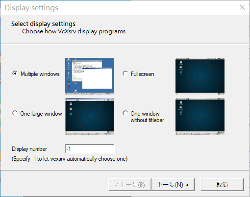
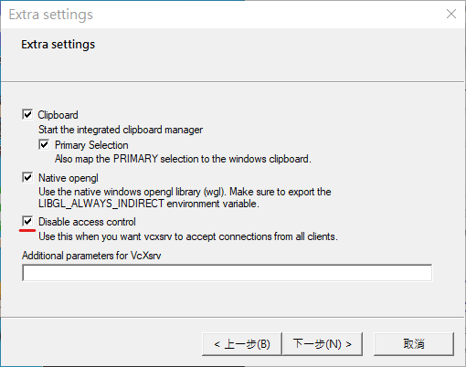
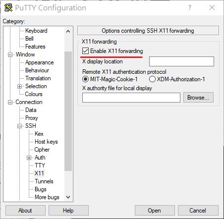
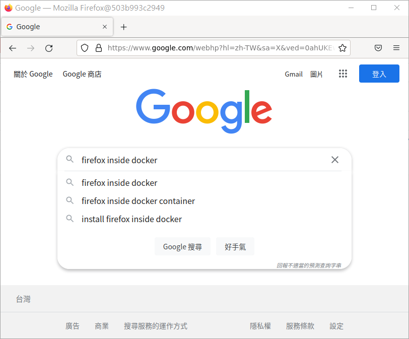
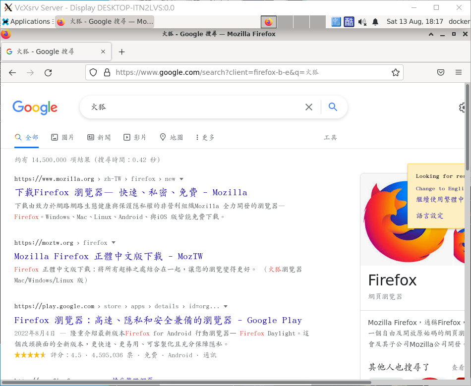
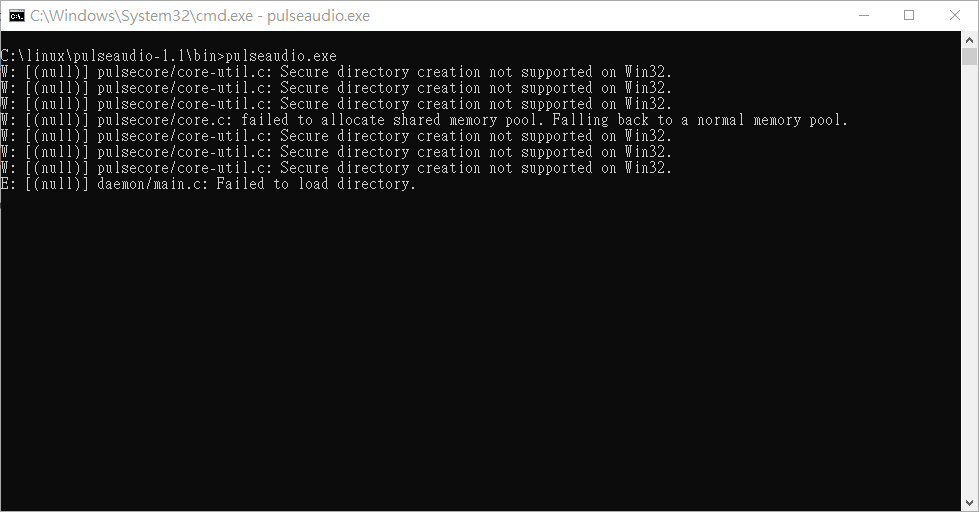
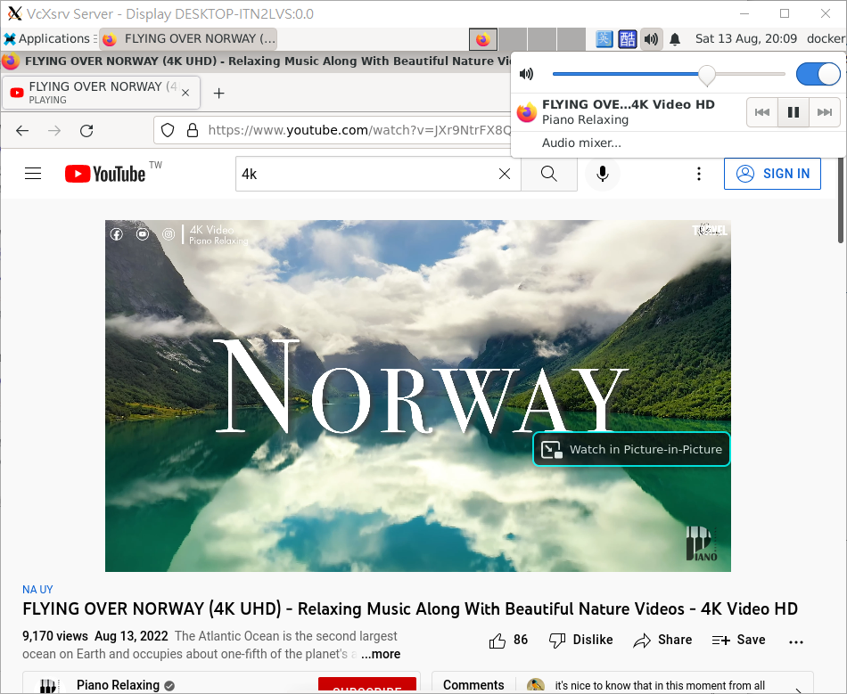
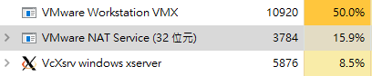

在 Windows 上執行 Linux Desktop
我自己在體驗 Linux Desktop 時都是會額外建立一個虛擬環境
這樣蠻耗費資源的，因為需要兩個 Linux 的硬碟空間，其中一個是平常用的 Ubuntu Server
在粗略的碰過 Docker 之後，開始在想能不能夠透過 Docker 來執行 GUI 程式
一來環境本身隨用隨棄，二來移除時也比較方便，比較沒有負擔
用 Docker 執行 Linux GUI 程式
在這個想法出來的時候，我便上網去尋找相關內容
很快的就找到了 firefox 的執行範例
其實還蠻有趣的
因為 X-Window 是 Client-Server 的架構
所以這個 Docker 就只是安裝 firefox，然後把本機的 X-Window socket 分享給它
但我的 Host 機器本身是架在 VMware 上的 Linux VM
沒有裝 X-Window ，所以沒辦法分享 socket
所以還要想辦法讓 GUI 可以在 Windows 上執行
在 Windows 上執行 GUI 程式
考慮到 X-Window 的 Client-Server 架構
在 Windows 上執行應該是可行的
所以就找了 Windows 用的 X-Server ： VcXsrv
依照使用情況決定要怎麼顯示 X-Window 的應用程式

如果連線本身來自外部， Disable access control 需要開啟

導向 X-Window 的封包到 Windows 上
這邊我採取了一個簡單的作法
就是開啟 putty ，然後透過 SSH 連線時，開啟 X-Forwarding

使用後就可把 X-Windows 的封包導向到 Windows 上
缺點就是這個 SSH 連線必須一直開著
接著依照前面放的 Stackoverflow 上的回答
然後把 DISPLAY 帶入 host.docker.internal 連到 Linux 本機
docker run -d --name firefox -e DISPLAY=host.docker.internal:0 jess/firefox |
這樣連線就會先連到 Linux 再經過 X-Forwarding 連到 Windows 上的 X-Server
就可以在 Windows 上使用 Linux 的火狐了！

中文輸入問題
簡單的使用 firefox 之後，很快的遇到了一個問題：中文輸入
沒辦法打中文，這樣就沒辦法隨意瀏覽，只能用英文
目前我還找不到直接使用輸入法的方式
即使透過執行 bash 去手動安裝 ibus 也無法將 daemon 啟動
因此目前只能夠使用 desktop 環境來使用輸入法而已
在 Windows 上執行 Linux Desktop
自從能夠使用 firefox 之後，我就在想能不能直接把整個桌面搬過來
於是開始建置有安裝 xfce 桌面環境的 Docker Image
結論是可行的
不過網路上已經有 desktop 的 docker 了，就直接拿來用了 :)
然後基於這個 Image 之上，另外安裝了中文字型、新酷音輸入法、以及 Firefox
這樣就有一個基本的桌面環境了
使用上特別對環境做了一些調整
最後就有了以下這個 Dockerfile
FROM x11docker/xfce |
最後的執行畫面長這樣：

聲音
看起來桌面環境都沒問題了
但還有一點美中不足，那就是沒辦法將聲音輸出
後來發現 x11docker 在 github 的 wiki 上有提供兩種方案：
- ALSA
- PulseAudio
ALSA
ALSA 的操作雖然比較簡單，但是需要分享 /dev/snd
對 VM 加入硬體，分享 /dev/snd 後，依然沒辦法輸出聲音
最後實在是研究不出什麼東西
所以就不使用了
PulseAudio
PulseAudio 本身就是 Client-Server 架構
如果是一般的配置方式，那會比 ALSA 複雜
但是如果是使用 tcp 連線到 Windows 播放，那就簡單很多
PulseAudio 官方有 Windows 版本
在開啟之前需要對一些檔案進行一些修改：
-
etc/pulse/default.pa
找到module-waveout的地方並在結尾加上record=0這樣可以禁止錄音的部份
找到
module-native-protocol-tcp的地方
啟用它，並在結尾加上auth-ip-acl=<your-docker-host-ip>
限制只有 docker 可以連入或者可以使用
listen 0.0.0.0 auth-anonymous=1
但是這樣誰都可以連到你的 PluseAudio Server -
etc/pulse/daemon.conf
找到
exit-idle-time的地方
啟用並設定成-1這樣是為了能夠讓 PulseAudio Server 持續執行
不會在結束一個 client 之後就自己結束
最後執行 bin/pulseaudio.exe

然後就可以在桌面上調整音量了

後續問題
CPU 消耗量大
僅僅是看一個 Youtube 影片，就可以占走 74.5 % 的 CPU 了
VM 本身的運行加上網路的運作以及 VcXsrv 就占走大部分的資源

而我配給 Linux VM 的 CPU 只有自身核心的 1/3 ，共兩顆核心
所以應該有 33% 是耗在 CPU ，而約 17% 耗在其他硬體模擬
再來就是網路上使用又會耗掉 16% 的 CPU
至少用這樣的方式來看影片或是使用 firefox 都不是個好方案
但是單純使用 desktop 的話，全部幾乎吃不到 10%
輸入法啟用問題
由於目前還沒找到可以在 Desktop 環境開啟前設定 ibus 的方法
所以沒辦法直接 build 設定好中文輸入法的環境
每次開啟時都必須自己添加語系切換或是直接下 ibus engine chewing 開啟輸入法
這也造成使用上的麻煩
安全性
在這篇使用了接受所有人連入的 X-Window Server 以及 PulseAudio Server
這本身就不是多安全的事情，畢竟任何人都可以連入
因為 Docker 本身只能使用 host.docker.internal 連線到 Linux VM
然後再透過 X-Forwarding 給 Windows
在這方面造成了連入的 IP 會是 Docker 的 IP 而非 localhost
迫使我只能關閉 Access Control 跟監聽 0.0.0.0 來接受這個 Docker 的連入
如果 X-Window 的主機在 Linux 上
則是直接將 X-Window 的 socket 給掛上去
似乎也不是個好的作法
結語
這些東西花我好幾天去找尋各種資料
從最一開始的 firefox 、中文字型、Desktop、中文輸入、背景啟動，最後到聲音
大致上運行上都沒什麼問題
除了瀏覽器的花費比想像中還大，有可能是用了 VM 的關係
至於安全性的部份還需要進一步研究才行
目前沒辦法保證這樣有比較安全
頂多可以不保留本機上的相關紀錄，而且隨用隨丟
所以還是玩玩就好，要不要拿來使用就看個人了
WSL 的部份也是可以這麼玩
因為我本身會用到 VMware 的 VT-x 去模擬巢狀虛擬化
所以沒有辦法使用 WSL
要用 WSL 的話，可以參考下面的影片：
XFCE 4 Linux Desktop on WSL (windows subsystem for linux) with Pulse Audio - YouTube
相關連結
- x11docker/xfce - Docker Image | Docker Hub
- PulseAudio on Windows – PulseAudio
- VcXsrv Windows X Server download | SourceForge.net
參考
- linux - Running X-Windows Desktop Apps in Docker Containers on Windows 10 - Stack Overflow
- Container sound: ALSA or Pulseaudio · mviereck/x11docker Wiki
- 如何在Debian下快速安裝中文字型 (www.w3help.cc)
- linux - How to run a program on startup in Debian - Stack Overflow
- 基于Pulse Audio在设备间传输声音 - 知乎
- Enabling sound in WSL / Ubuntu - Let It Sing! - X410.dev
更新
-
2023-04-04
修正 記憶體消耗量大 -> CPU 消耗量大太晚發現這個問題了
明明條目是寫記憶體，內文都在說 CPU …